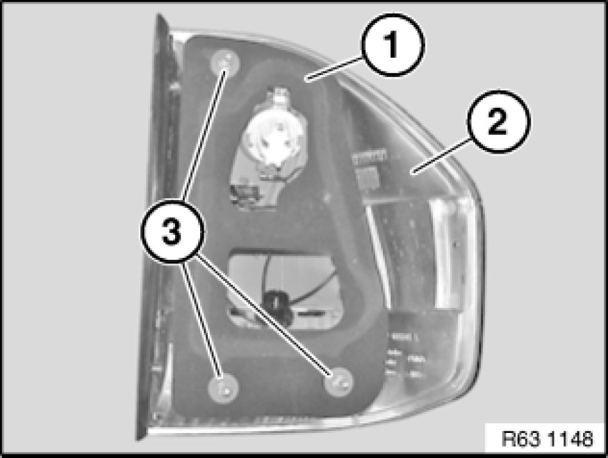

Replacing Sealing Frame for Left or Right Rear Light (Side Panel) (From 09/06)
63 21 101 - Replacing sealing frame for left or right rear light (side panel) (from 09/06)

Necessary preliminary tasks:
- Remove rear light Removing and Installing/Replacing Left or Right Rear Light (On Side Panel) (From 09/06)

Remove sealing frame for rear light (1) in upwards direction from rear light (2).
Installation:
Sealing frame for rear light (1) is centered via openings for threaded pins (3).
Make sure sealing frame for rear light (1) is correctly seated on rear light (2).